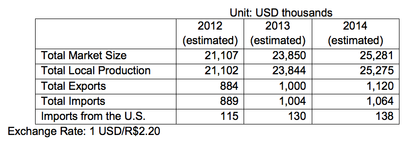

3 id="beauty-and-cosmetics">Beauty and Cosmetics – Personal Care, Fragrances and Cosmetics (CT&F)
Overview
Return to top

Total Market Size = US$16.530 billion
Data Source: Brazilian Association of the Cosmetic Toiletry and Fragrance Industry (ABHIPEC)
Total Local Production: US$16.527 billion
Total Exports: US$693 million
Total Imports: US$696 million
Imports from U.S.: US$90 million
Between 2012 and 2013, both local production and exports of Brazilian beauty and cosmetics goods grew about 13 percent, signaling both opportunity for and strong domestic competition against U.S. exporters. These impressive results attest to the vitality of Brazil’s domestic beauty/cosmetics sector, the growing demand by Brazilian consumers for high-quality, innovative imported products, and the country’s emerging dominance in key foreign markets.
Besides high demand in Brazil’s domestic market, the country’s emerging middle class is gaining economic and political power. More recently, the GOB’s investment in social programs is contributing to the country’s role as worldwide industry leader and, most notably, fueling women and minority entrepreneurship. High technology standards, a strong “Brazil brand” cache, and highly-qualified industry professionals are also contributing to the country’s world-leader status in this dynamic sector.
Like most foreign markets, Brazil requires that U.S. exporters have a high degree of quality and management certification, such as ISO 9000 and ISO 14000. In addition, U.S. suppliers must demonstrate clear concern for social responsibility and environmental conservation. There is an on-going demand for natural and organic products, packaged in recyclable materials.
Hair care products are the largest segment of the Brazilian cosmetics and toiletries market. Shampoo sales, both imported and locally made, constitute about 50 percent of domestic sales; they are divided evenly between Brazilian and well-known multinational suppliers.
Sub-Sector Best Prospects
Return to top
While the personal hygiene market in Brazil constitutes the majority of total sales in the cosmetics and toiletries sector, the cosmetics sector shows the biggest potential in Brazil. New and improved imported and domestic product lines for teenagers and women between the ages of 35 and 60 have especially good potential.

Best prospects for U.S. exports to the Brazilian cosmetics and toiletries market include: bio-cosmetics, ethnic products, and cosmetics for men. It is notable that Brazil is the world’s largest market for men’s personal care products.
Opportunities
Return to top
The United States is Brazil's largest cosmetics supplier, mostly supplying mass- market cosmetics known for high quality and premium pricing when compared to the mass-market products produced domestically. Brazilian companies import all types of U.S. cosmetics, which are then resold to all segments of the population.
Major Trade Shows:
- FCE Cosmetique – www.fcecosmetique.com.br
- Hair Brasil- www.hairbrasil.com.br
- Beauty Fair- www.beautyfair.com.br
Web Resources
Return to top
Government of Brazil:
- Brazilian Agency for Sanitary Health
Other:
- Brazilian Association of the Cosmetic Toiletry and Fragrance Industry
For more information about export opportunities in this sector, contact Industry Specialist Denise Barbosa: denise.barbosa@trade.gov